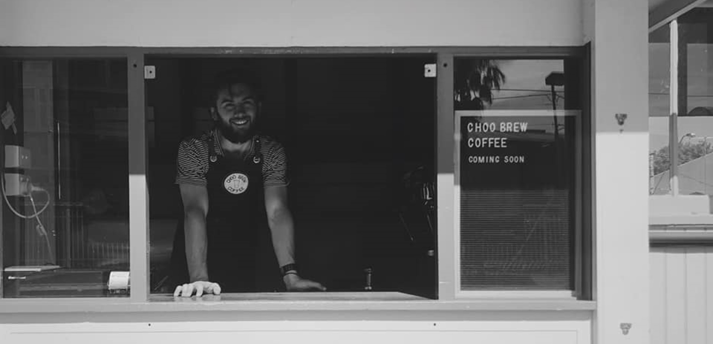

My first sole trader business
II have always had a propensity for problem solving and so video games and board games have always held an interest for me.
I organised a murder mystery for my partner’s birthday, testing it on a group of friends before hosting it for some of her friends. My parents also wanted to get involved so I ended up hosting it a third time for my dad’s birthday. It included a warm up problem solving game, wine tasting, fishing in the pool (for paper cut outs) to decipher a code as well as clues and red herrings about who the murderer was.
I also love board games and card games. Hosting friends to play more unique options like Terraforming Mars or Heat. Though I have always kept in touch with some of the more classic options such as 500 or Settlers of Catan.
Tinkering with electronics is a pastime of mine. I once made a non IR laser tag system by soldering together a 555 and 4017 chip, some LDRs, regular resistors, capacitors and a laser diode. It didn’t work very well, but for my own design, I am pretty proud of it. In the same vein I have also built my own PC. using a guide I found online, I picked out the hardware that fit my budget and needs, had it all shipped to me and then built it piece by piece. Originally I had 16GB of RAM but I recently removed 1 of my 2 CPU fans so I could fit in an additional 16GB. I have also recently made the transition to a Linux OS on my home PC.